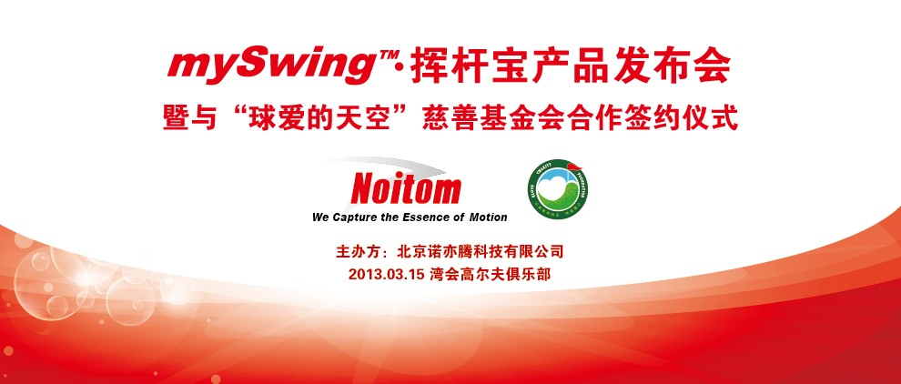
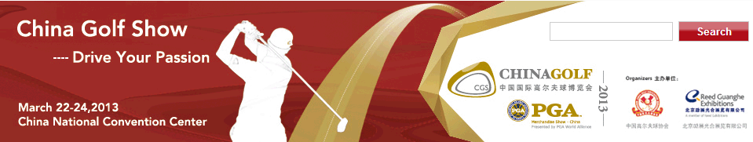

北京诺亦腾科技有限公司位于中关村科技园区德胜科技园内，是一家在动作捕捉领域具有国际竞争力的公司。公司核心团队由多名海外留学归国人员组成，具有世界级研发能力，研究领域涉及传感器、模态识别、运动科学、有限元分析、生物力学以及虚拟现实等。通过多学科知识交叉融合，公司开发了具有国际领先水平的“基于MEMS惯性传感器的动作捕捉技术”，并在此基础上形成了一系列具有完全自主知识产权的低成本高精度动作捕捉产品。
尽管基于传感器的动作捕捉技术出现不久，但由于其性价比高，方便易用等特点，已经孕育出巨大的市场机遇，市场已处于爆发前期。公司准确把握技术进步与市场契合的时机，提前进行了充分的技术储备，坚持通过技术创新实现突破，从而创造企业价值并得到世界认可。公司的创新成果吸引了来自不同领域不同层面的诸多关注，包括世界著名的体育训练机构、文化创意团队、医疗康复训练厂商等。公司未来将充分发挥动捕技术优势，与合作方一起携手并进，不断创造出对社会更有利的新技术、新产品、新应用。
把握尖端技术发展趋势、熟悉国际市场走向
坚持以科技创新为公司立足之本，突破多项技术壁垒
完全自主知识产权，世界领先的基于惯性传感器动作捕捉技术
科技与文化、科技与教育、科技与医疗融合，推动社会进步
2013年3月15日（周五）14：30在北京湾会高尔夫俱乐部举行
mySwing™中国市场产品首发新闻发布会。
届时，研发团队将向媒体记者展示Noitom(诺亦腾)公司采用当今世界最领先的无线高速动作捕捉技术开发的高尔夫挥杆电子分析仪。
具体日程安排如下：
诚邀您的光临。
China Golf Show中国国际高尔夫球博览会将于3月22日至24日在国家会议中心举办，诺亦腾展位E1072，欢迎您的莅临指导。
点击这里下载免费 mySwingTM iOS App软件
点击这里下载免费 mySwingTM Android 软件
动作捕捉（Motion Capture），是将运动动作记录为数字模型的过程。
诺亦腾掌握基于惯性传感器动作捕捉系统的核心技术，在系统架构、核心算法方面均具有优势，正努力成为这一领域的领跑者